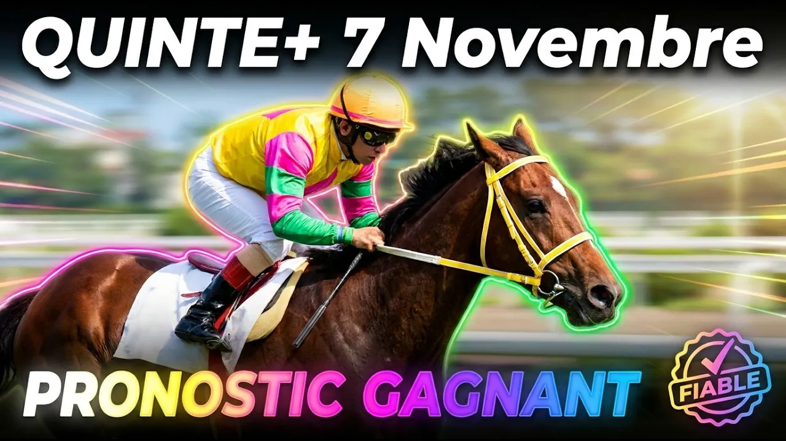

Bienvenue à Deauville, où le sable fibré normand s'apprête à accueillir un choc de galop particulièrement intense. Ce samedi 7 novembre 2026, à quinze heures quinze précises, seize galopeurs de quatre ans et plus s'élancent sur les 1 900 mètres du Prix de l'Opération Epsom. Troisième course de la Réunion 1, un Quinté+ très sélectif disputé en plat, corde à droite, sous forme de handicap divisé de Classe 2.
La fête sera belle, mais elle ne pardonnera rien. Nous étudions ici la vitesse d'action, le piège des stalles et la fraîcheur de chaque participant, avec un enthousiasme communicatif et des arguments clairs.
Parce que ces 1 900 mètres exigent une adhérence et un rythme régulier bien particuliers. Et parce que le placement dans les stalles joue un rôle décisif : s'élancer tout à l'extérieur contraint les jockeys à des efforts prématurés pour ne pas voyager nez au vent, tandis que les cordes en dedans économisent de précieux mètres.
Seize partants, seize scénarios. Restez jusqu'au bout, car notre préféré s'élance en bas de tableau avec une petite charge. La fête peut commencer.
Ce hongre de cinq ans confié à Maxime Guyon sous l'entraînement de l'écurie Brandt s'impose comme une évidence. Deuxième de la course référence sur ce tracé exact, il affiche une régularité irréprochable dans les gros handicaps. Malgré la charge la plus lourde et la corde 11, la complicité entre Maxime Guyon et l'écurie Brandt dépasse 50 % de réussite dans les cinq premiers. Une base solide pour le podium.
Ce pensionnaire de Stéphane Wattel, drivé par Théo Bachelot, joue à domicile sur la côte normande. Absent depuis le début de l'été, il effectue une rentrée mais s'est déjà illustré sur sa fraîcheur. Le handicapeur a soulagé son poids d'un kilo, avantage certain. Malgré la corde 15 tout à l'extérieur, le duo Bachelot - Quiet King affiche 70 % de réussite ensemble. Nous le gardons en haute position.
Entraîné par Henri-Alex Pantall, ce mâle de cinq ans a remporté son Quinté en juin avant d'accuser le coup sous une valeur surchargée. Désormais rabaissé d'un kilo sur l'échelle des poids, il retrouve le sable fibré qu'il affectionne. Redoutable finisseur quand la course est rythmée, il possède le coffre nécessaire pour accrocher une belle place.
Ce hongre de quatre ans préparé par Philippe Decouz est confié à Aurélien Lemaitre. Bon septième de la course référence alors qu'il s'était élancé tout à l'extérieur, il bénéficie cette fois du numéro 4 dans les stalles. Idéalement placé le long du rail, avec un entraîneur redoutable dans les événements, il monte en puissance et détient une première chance.
Ce hongre de sept ans entraîné par Jean-Marie Béguigné se présente après deux courses de remise en jambe suivant une longue absence. Sa valeur handicap a baissé et le rend compétitif à terme, mais il a hérité d'un numéro 16 exécrable tout à l'extérieur. Contraint de subir le déroulement de la course à l'arrière, il est écarté pour le moment.
Drivé par Stéphane Pasquier sous l'entraînement de Damien Artu, voici le coup de folie de la course. Rabaissé au poids et idéalement loti avec le numéro 1 dans les stalles, il va pouvoir raser les rails et économiser tout son parcours. Le tandem Pasquier - Artu affiche 75 % de réussite ensemble : un coup de folie spéculatif à glisser en fin de combinaison.
Cette jument de six ans entraînée par Mademoiselle Bresson est drivée par Jérôme Claudic. Cinquième de la course référence sur ce parcours le mois dernier, elle fait preuve d'une grande constance sur le sable fibré. Bien placée avec la corde 8, elle court à sa juste valeur et s'annonce très compétitive.
Cette femelle de cinq ans entraînée par Paul de Chevigny est associée à Ambre Molins. Vainqueur de son Quinté au printemps sur le gazon parisien, elle a besoin de retrouver le rythme après une rentrée décevante sur ce tracé. Partant tout à l'extérieur avec la corde 13, elle devra d'abord rassurer.
Cette pouliche de quatre ans entraînée par Éric Libaud bénéficie de la corde 3 en dedans. Malgré cet avantage initial, elle compte quatre échecs consécutifs à ce niveau. Son entraîneur réussit dans les handicaps, mais elle manque de marge face à une telle opposition. Nous l'écartons.
Cette jument de sept ans préparée par Maxime Cesandri est confiée à Augustin Madamet. Très décevante en dernier lieu sur ce parcours, son entraîneur assure qu'elle a des excuses à faire valoir. Bénéficiant du numéro 2 dans les stalles, elle peut se racheter en accrochant une petite allocation.
Ce mâle de huit ans entraîné et drivé par Mickaël Justum est un véritable serviteur des gros handicaps. Rabaissé sur l'échelle des poids, il vient de conclure sixième tout près des places sur ce tracé exact. Expérimenté et généreux dans l'effort, c'est un outsider valable pour compléter les bas de cartes.
Cette pouliche de quatre ans entraînée par Davy Bonilla est drivée par Anthony Crastus. Deuxième d'un handicap sur ce parcours la semaine dernière, échouant d'un cheveu pour la victoire, elle affiche une forme éblouissante. Malgré la corde 14 à l'extérieur, son petit poids lui donne des ailes pour viser un accessit.
Ce hongre de quatre ans entraîné par Carina Fey est associé à Eddy Hardouin. Il vient de survoler une course à conditions sur ce tracé deauvillais avec une aisance remarquable. Déjà confirmé à ce niveau et bien loti avec la corde 7, son regain de forme en fait un prétendant sérieux aux premières places.
Ce hongre de cinq ans préparé par Maxime Cesandri est drivé par Dorian Provost. Invaincu en deux tentatives dans les handicaps sur ce parcours cette saison, il a été pénalisé au poids mais monte de catégorie, ce qui lui permet de porter une charge très légère. Le duo Provost - Her Christopher affiche 60 % de réussite : sa régularité force le respect.
Ce hongre de cinq ans entraîné par Adrien Fouassier est confié à Hugues Lebouc. Deux fois placé de Quinté au printemps sur le sable fibré, ses récentes sorties ne reflètent pas sa véritable valeur. Bénéficiant de la corde 6 et d'un poids avantageux, c'est un outsider séduisant pour pimenter les rapports.
Terminons en beauté avec notre grand préféré. Ce hongre de quatre ans entraîné par Davy Bonilla et drivé par Christopher Grosbois est invaincu en deux sorties sur la piste en sable fibré de Deauville. Troisième pour ses débuts en Quinté à Chantilly, il se présente avec le plus petit poids du lot et une fraîcheur optimale. Tous les feux sont au vert pour le voir s'imposer.
Pour élaborer une stratégie rentable sur ce Prix de l'Opération Epsom, associez les chevaux affûtés du bas de tableau à la régularité des favoris. La candidature de Speedy Green s'impose comme notre préféré absolu, épaulée par la solidité de Zeloro et la montée en puissance d'Al Max. Pour compléter vos jeux, la fraîcheur de Quiet King, la forme d'Hermès Wood et les outsiders Piquoiseau ou Lavendin apportent de belles garanties.
Base : 16 Speedy Green
Top 5 : 16 - 1 - 13 - 2 - 4
Couplé Placé :
16 Speedy Green et 1 Zeloro avec 13 Hermès Wood, 2 Quiet King et 4 Al Max
Deux sur Quatre :
16 - 1 avec 13 - 2 - 4 - 7
Multi en 5 :
16 - 1 - 13 - 2 - 4
Quinté+ Ordre :
16 - 1 en piliers avec 13 - 2 - 4 - 7 - 6 - 15 en associés
Retrouvez l'analyse vidéo complète sur notre chaîne YouTube Bravo Turf. Abonnez-vous, activez la cloche des notifications et laissez un pouce bleu si ce décryptage vous aide.
Jouez avec modération
La fête du turf n'a de sens que si elle reste un plaisir. Ne misez jamais plus que ce que vous pouvez vous permettre de perdre. Fixez-vous un budget hebdomadaire et tenez-vous-y. En cas de difficulté, consultez Joueurs Info Service au 09 74 75 13 13.